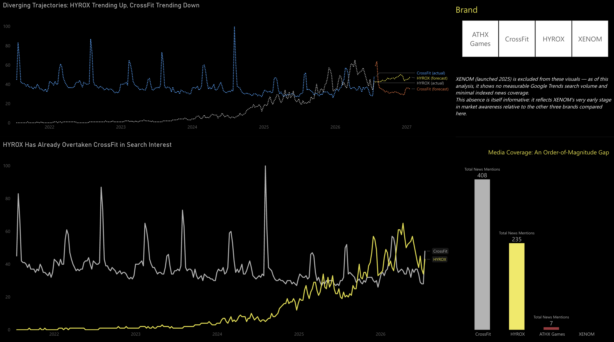
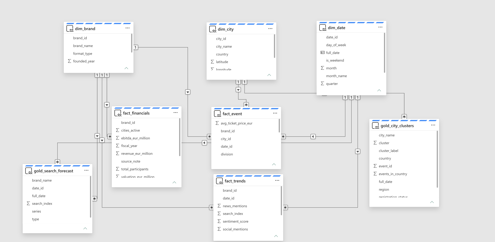
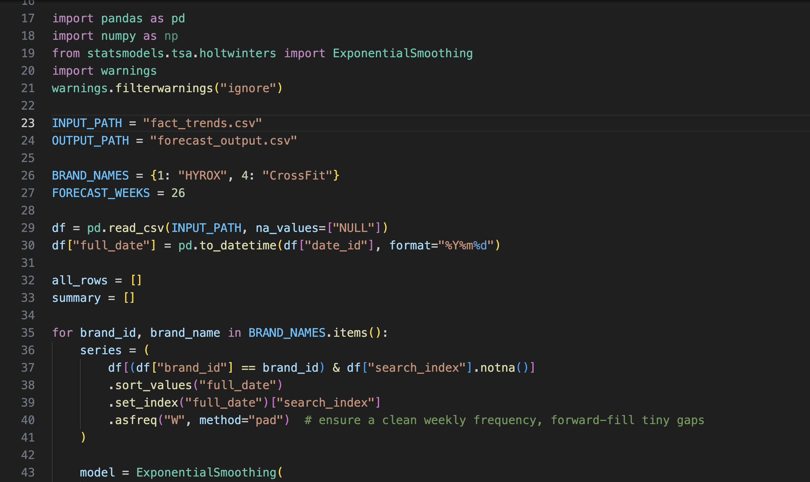
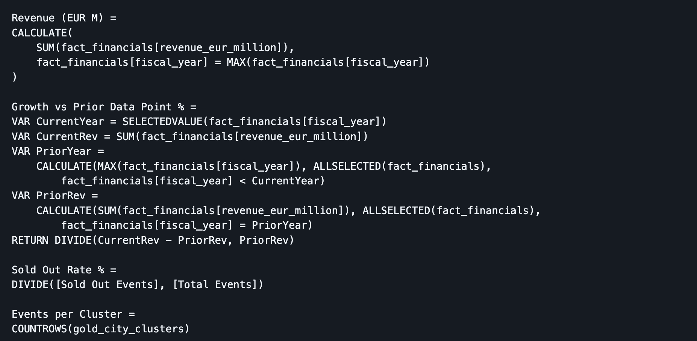
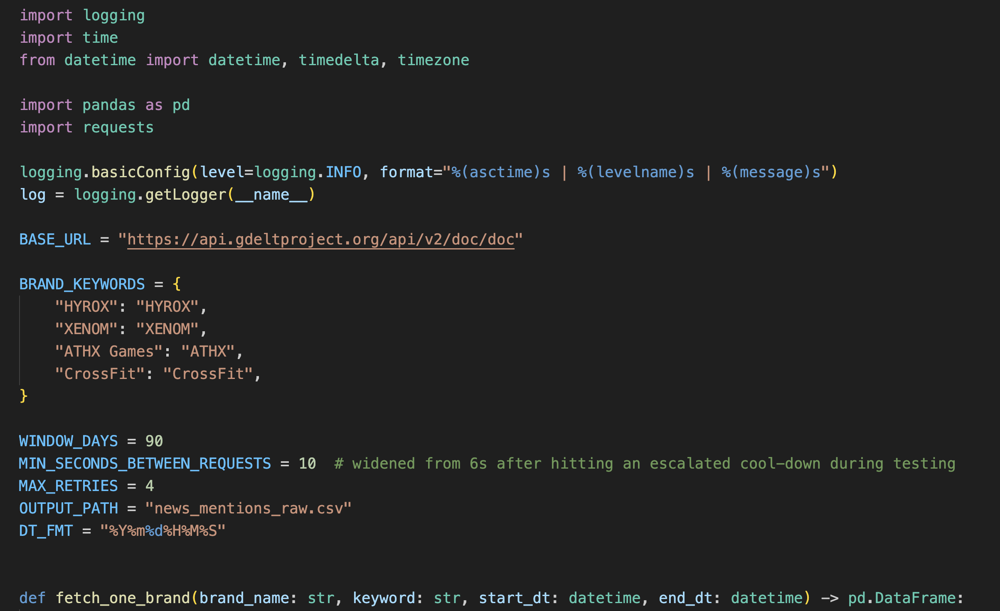
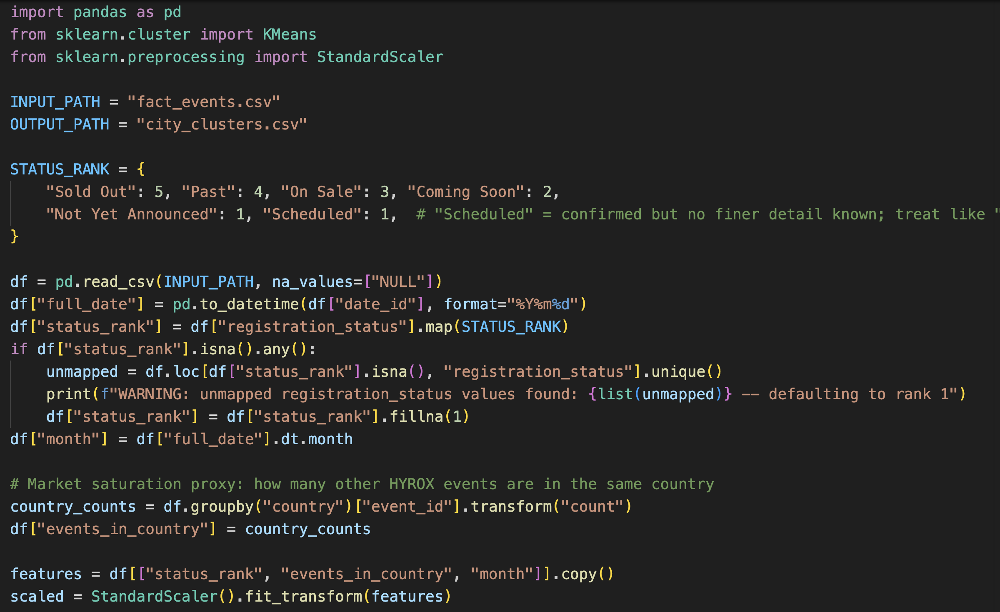

00 Executive summary
This project investigates a fast-moving business question: how did a fitness competition founded in 2017 grow into a company reportedly valued at ~€850M, in active acquisition talks with LVMH's L Catterton — and how does it actually stack up against both a legacy competitor (CrossFit) and newly-funded challengers (XENOM, ATHX Games)? Rather than relying on press-release narrative, I built an end-to-end pipeline — real (not simulated) data collection, a Microsoft Fabric Lakehouse/Warehouse architecture, two machine learning models, and a Power BI report — to find out.
I structured the work around five questions I'd actually want answered before forming a view on this business.

01 Why is HYROX growing faster than an established brand like CrossFit?
I collected five years of weekly Google Trends search-interest data for both brands, then fit a Holt-Winters exponential smoothing model (additive trend, damped, 52-week seasonality) to project the next six months.
The answer: HYROX has already overtaken CrossFit in raw search interest, and the trajectories are diverging — HYROX is projected +10.4% over the next six months, while CrossFit trends -5.7%. Growth here isn't being bought with ad spend: HYROX's near-zero customer-acquisition cost comes from finishers organically posting their own results, turning every event into free marketing.

02 How does HYROX actually make money, and why does LVMH want in?
I built a star-schema data warehouse in Microsoft Fabric and anchored a fact_financials table to published revenue, EBITDA, and valuation estimates — every figure explicitly source-tagged, since none of this is disclosed directly by a private company.
The answer: revenue moved from an estimated €40M (2023) to €135M (2025) at a ~20% EBITDA margin — high for a mass-participation events business. The current L Catterton/HYROX stake talks value the company at roughly €850M. That fits a broader pattern: LVMH has been buying into sports communities more broadly (F1 sponsorship, Real Madrid, individual athlete deals) — the read from outside analysts is that LVMH isn't acquiring an events calendar, it's acquiring a self-marketing, high-engagement community.

03 Are the new "hybrid fitness" competitors — XENOM, ATHX Games — real threats yet?
I collected daily news-mention volume for all four brands via the GDELT 2.0 Doc API (free, keyless, but strictly rate-limited — handling that reliably was its own small engineering problem).
The answer: not equally. ATHX Games (Adidas-backed) already has a measurable media footprint. XENOM, by contrast, shows zero measurable Google Trends search volume and almost no indexed news coverage — a funded idea, not yet an established rival. CrossFit still leads on raw media mentions (408 vs. HYROX's 235), a legacy-awareness gap that hasn't caught up with the search-trend reversal already underway.

04 Could I actually trust my first data source?
My first event-calendar scrape (roxupdates.com) looked complete — 72 events, clean structure. But cross-checking a detail I happened to know personally (a fourth Mexican city, Cancún) revealed the source was silently missing the entire first quarter of the 2026 season, plus several second-editions later in the year. I rebuilt the calendar from a more complete source, validated it end-to-end, and grew the dataset from 72 to 121 real events.
The answer: yes — but only after treating "looks complete" as a hypothesis to test, not a fact to trust. This is the moment that most changed the project's numbers: the market-saturation signal in my clustering model roughly doubled once the real event density was in place, which would have meaningfully understated HYROX's multi-city expansion strategy in China and the US.
05 What does the 2026 event calendar reveal about HYROX's expansion strategy?
I ran a K-means clustering model (registration status + same-country event density) across all 121 confirmed 2026 events to segment them by market maturity, rather than treating "HYROX is expanding" as one undifferentiated story.
The answer: it's three distinct strategies happening at once — 60 events already active or completed, 40 standalone single-city tests in newer territories, and 21 events in aggressive multi-city pushes (notably China) where several cities launch simultaneously rather than one at a time.

06 Results at a glance
07 Conclusion
This project shows how a Python → Microsoft Fabric → Power BI pipeline can turn scattered, imperfect public data — rate-limited APIs, incomplete calendars, press estimates instead of audited financials — into a genuine competitive intelligence report, as long as every limitation is documented rather than smoothed over. Rebuilding the event calendar after catching a real gap in my first source was the most valuable part of the process: it's the difference between a dashboard that looks finished and one that's actually been checked.